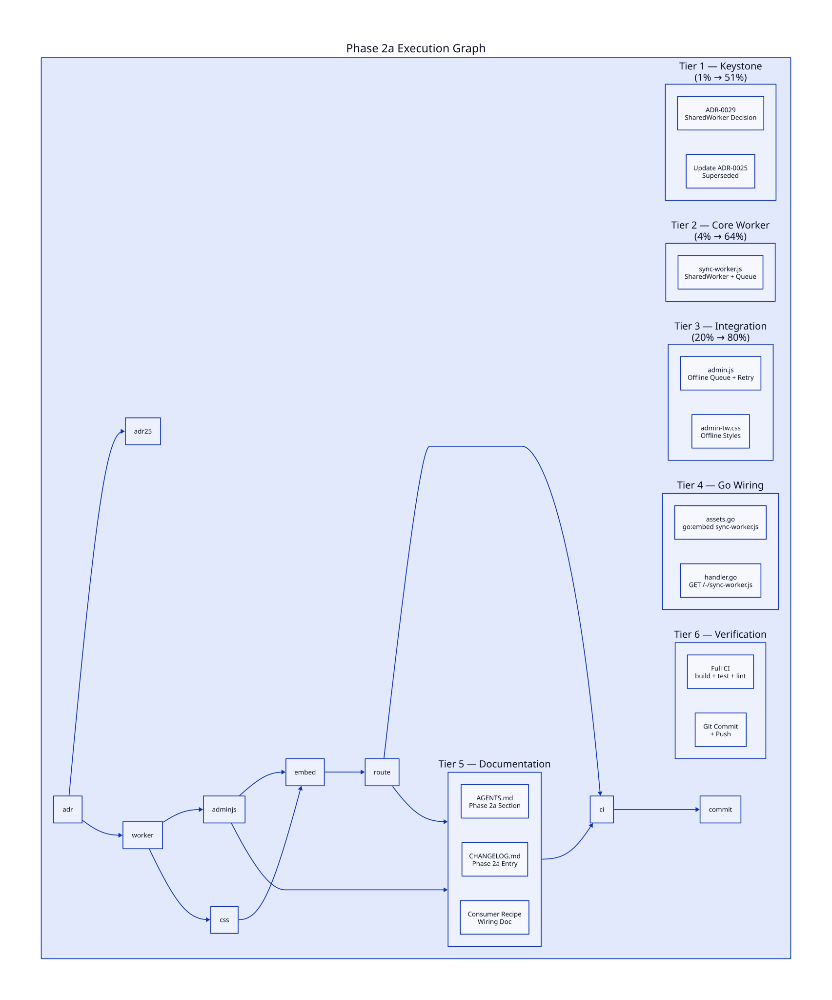

Queue-Only offline command queue using a SharedWorker coordinator. No Service Worker, no
IndexedDB, no OPFS. The worker queues command IDs when the network is down and tells tabs
to retry via
htmx.trigger() on reconnect.
ADR-0029 + sync-worker.js. These two artifacts lock in the SharedWorker architecture and provide the runnable coordinator script. Everything else is wiring and documentation.
Above + admin.js integration. The offline queue connects to the existing
honest-UI lifecycle. htmx:sendError enqueues instead of rejecting. Retry
fires via htmx.trigger().
Above + CSS + Go embed/route + admin-demo. The worker is served from the Go binary, the demo showcases offline behavior, and documentation guides consumers.
Phase 2b (Service Worker + Background Sync + OPFS) + Phase 2c (WASM local decide). Deferred — requires product decisions and substantially more complexity.
Sorted by Pareto tier (impact), then by effort (ascending within tier).
| # | Tier | Task | Impact | Effort | Status |
|---|---|---|---|---|---|
| 1 | Keystone | Write ADR-0029: SharedWorker Phase 2a architecture | Critical | 12m | Done |
| 2 | Keystone | Update ADR-0025: mark Q1/Q2 superseded by 0029 | High | 3m | Done |
| 3 | High | Create sync-worker.js (scaffold + queue + flush + errors) | Critical | 10m | Done |
| 4 | High | Verify HTMX event names via Context7 | High | 5m | Done |
| 5 | High | Implement SharedWorker registration + offline queue + retry in admin.js | Critical | 12m | Done |
| 6 | Medium | Add offline CSS classes (amber dashed, queue badge) | Medium | 8m | Done |
| 7 | Medium | Embed sync-worker.js in assets.go + add route in handler.go | High | 8m | Done |
| 8 | Medium | Verify adminui module builds + tests pass | High | 5m | Done |
| 9 | Low | Update AGENTS.md: Phase 2a section | Medium | 10m | Done |
| 10 | Low | Update CHANGELOG.md | Medium | 5m | Done |
| 11 | Low | Write consumer wiring recipe doc | Medium | 12m | Done |
| 12 | Verify | Write D2 execution graph + render to SVG | Medium | 10m | Done |
| 13 | Verify | Write planning HTML report (this file) | Medium | 12m | Done |
| 14 | Verify | Run full CI: build + test + lint + errorfamily | Critical | 10m | Done |
| 15 | Verify | Git commit + push | High | 5m | Done |
The worker does three things only:
1. Queue command IDs from tabs when offline
2. Detect connectivity changes (navigator.onLine + events at
worker scope)
3. Retry — on reconnect, tell each originating tab to re-issue via
htmx.trigger()
It does not send HTTP requests (HTMX does), own SSE (per-tab EventSource), or persist to disk (in-memory).
SW's one unique capability — Background Sync for closed-tab writes — is Chrome/Edge only and requires the consumer to surrender their SW scope. For a library, that's unacceptable. SharedWorker covers 90% of the value at 10% of the complexity.
The research doc concluded "IndexedDB is Dead — OPFS or Nothing." For Phase 2a's in-memory queue, there is nothing to persist. IndexedDB is banned (ADR-0029). OPFS deferred to Phase 2b.
htmx:sendError). We catch the failure and queue for retry. The online path is
completely unchanged.

| File | Change |
|---|---|
docs/adr/0029-sharedworker-phase2a.md |
NEW — Architecture decision |
docs/adr/0025-phase2-research.md |
Status → Superseded by 0029 |
adminui/assets/sync-worker.js |
NEW — SharedWorker coordinator (~80 lines) |
adminui/assets/admin.js |
+ initSyncWorker, enqueueCommand, retryQueuedCommand, htmx:sendError |
adminui/assets/admin-tw.css |
+ [data-sync-queued], .sync-bar[offline] styles |
adminui/assets.go |
+ sync-worker.js in go:embed, ETag bump |
adminui/handler.go |
+ GET /-/sync-worker.js route |
AGENTS.md |
+ Phase 2a section, asset listing |
CHANGELOG.md |
+ Phase 2a entry |
docs/recipes/offline-command-sync.md |
NEW — Consumer wiring recipe |
docs/planning/2026-06-28_23-19_*.d2/.svg |
NEW — Execution graph |